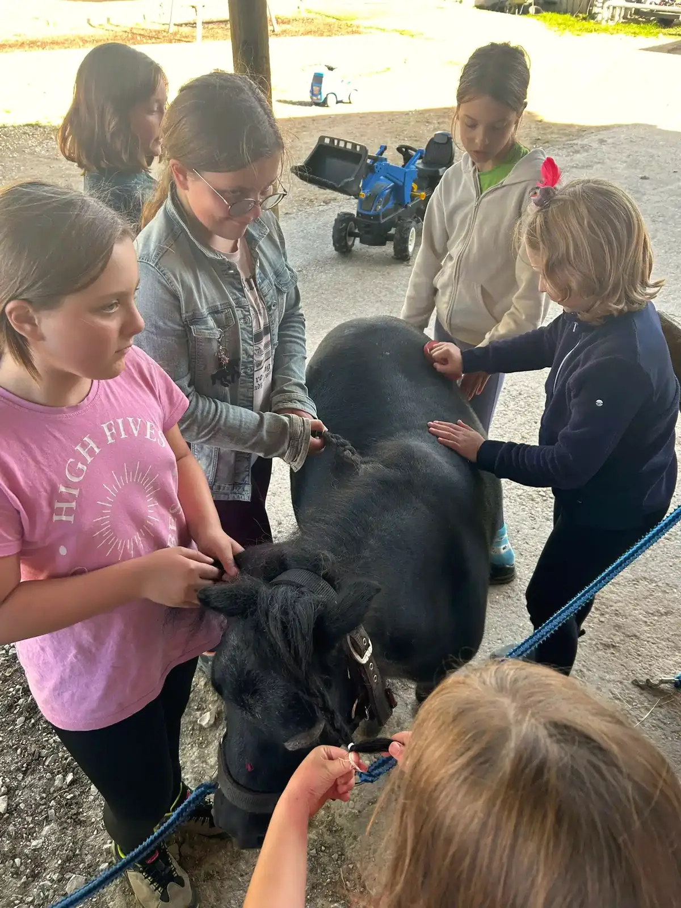
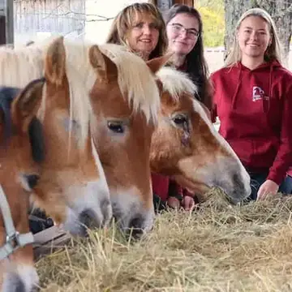
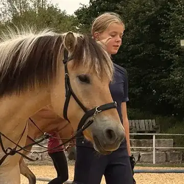
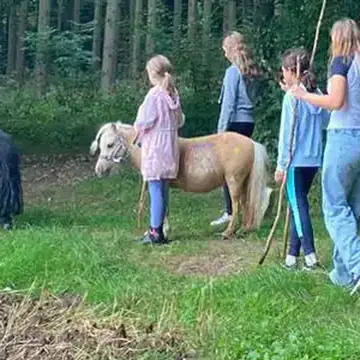
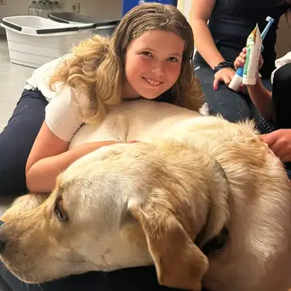
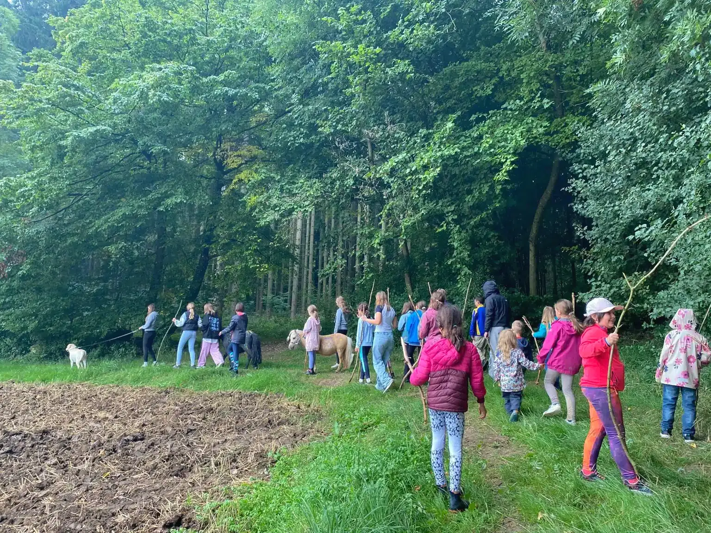
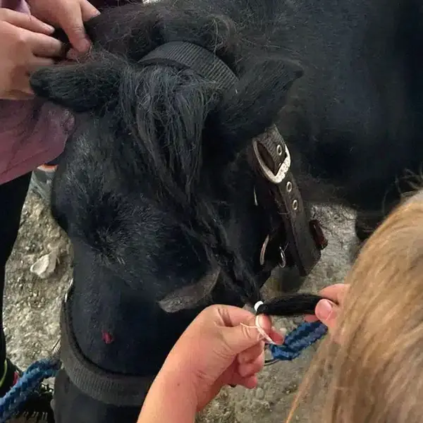
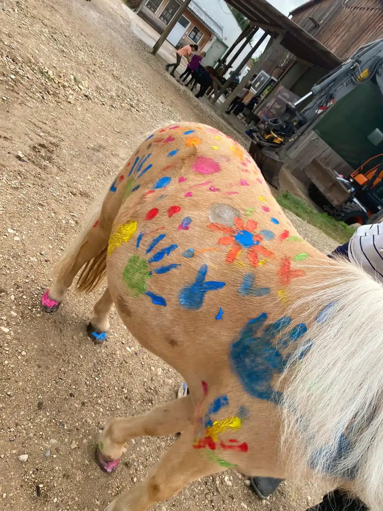

Die Herde
Alle leben im Offenstall mit freier Bewegung, Unterständen mit Waldboden und über 4.500 m² Paddock. Die Heuraufe öffnet elektrisch zu festen Zeiten. Reitergewicht höchstens 70 kg.

Schulpferde
-

Amadeus
Haflinger · Wallach · 2007 · 148 cm
Geländesicher und springt gern. Der Erfahrene unter den Schulpferden.
-

Ora
Fjordpferd · Stute · 2008 · 146 cm
Geländeprofi. Sabbert gern.
-
Joker
Deutsches Reitpony-Mix · Wallach · 2010 · 150 cm
Der Herdenchef. Wird gebisslos geritten.
-
Rudolf
Huzule · Wallach · 2016 · 143 cm
Verspielt. Mit ihm lernt man Trab und Galopp.
-
Viggur
Isländer · Wallach · 2013 · 138 cm
Frech, aber brav. Das Pferd für die Jüngsten.
-
Snoopy
Fjordpferd · Wallach · 2020 · 152 cm
Das größte Pony am Hof. Geht an der Longe.
-
Fee
Haflinger · Stute · 2010 · 148 cm
Ruhig und anfängerfreundlich.
-
Nala
Deutsches Reitpony · Stute · 2010 · 146 cm
Sehr fein zu reiten, und mit einer besonderen Optik.
Jungpferde
-
Fafnir
Isländer · 2021
Beeindruckende Mähne. Wächst noch in seine Aufgabe hinein.
-
Olaf
Konik · 2020
Die robuste Rasse aus Polen, hier in Ausbildung.
-
Venja
Isländer · Stute · 2021
Noch schüchtern. Bekommt ihre Zeit.
-
Ludwig
Lewitzer · 2024
Der Jüngste. Neugierig und begrüßt alle am Paddock.
Shetlandponys
-

Manni
Shetlandpony · 2016 · 81 cm
Mit Zorro und Pauline 2025 bei über 30 Kindergartenbesuchen dabei.
-
Zorro
Shetlandpony · 2016 · 76 cm
Im Sommer braun, im Winter weiß.
-
Pauline
Shetlandpony · etwa 30 Jahre · 92 cm
Rentnerin. Gerettet, und jetzt die Älteste am Hof.
Hoftiere
-
Leo
Kater · 2025
Der Hofkater, seit 2025.
-

Sammy
Labrador · 2022
Kinderlieb. Meistens der Erste, der euch begrüßt.


